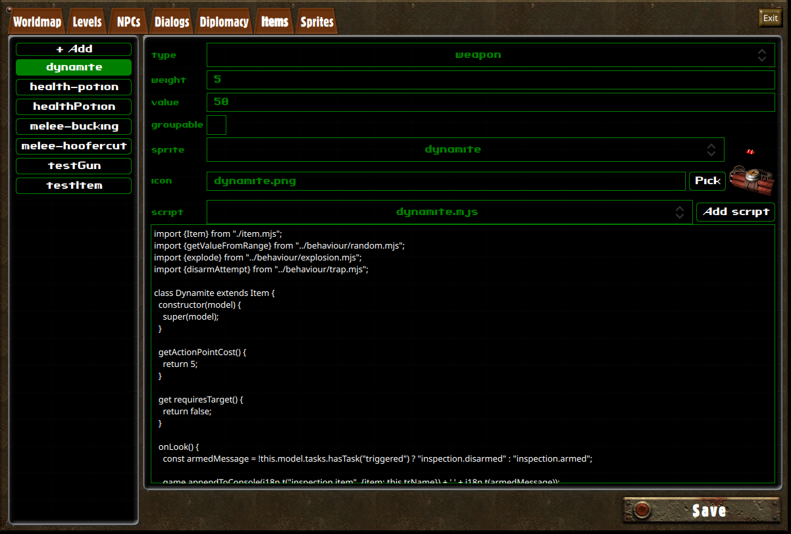
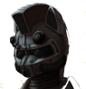
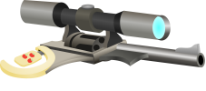
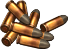

We will now direct our attention towards the item management system. Items are game objects as well, but unlike other game objects, they can be extracted from the tilemap and stored in an inventory. Moreover, they can be equiped in inventory slots (armor, primary item, secondary item).
An item's behaviour is determined by his itemType property. Item types can be defined in the Game Editor, in the Items tab. Let's have a look at the interface:

| Type | A property meant as a way to filter items by category in inventories. |
| Weight | The item weight, used for carry weight checks. |
| Value | A value of reference to use for barter. The actual barter value will be calculated using this value and the barter skill value of the player's character and the NPC. |
| Groupable | Groupable items can merge together, and have an amount property. It is useful anytime the item's behaviour doesn't require the game object to have a persistent state, as a mean of avoiding cluttered inventories. Note that the groupable property can be overriden by the item's script, and relative to each instance of a given item type. |
| Sprite | The sprite is used to represent the object when it is on a tilemap. Item sprites are defined in the Sprite Editor, using the items sprite group. The sprite's size should be 72x36. |
| Icon | The icon is used to represent the object when it is in an inventory. Item icons should be stored in assets/icons. |
| Script | The scripts for items are located at scripts/items. They're game object scripts, as we've already seen many times so far, but can implement a few more properties and methods related to inventory, equipment and targeting. |
Storage objects are game objects featuring an Inventory. Characters, for instance, are a sub-class of Storage objects. In this section, we will create a Storage object to demonstrate how inventories are managed in the game editor.
Open the LevelEditor and create a Storage object, using the locker sprite:
As you can see, and just like for character objects, storage objects have an Inventory button. It's pretty straightforward to use:
Plain storage objects don't need a script: our locker is ready to use with just these few steps.
But what if we want to implement more complex behaviours ? For instance, let's say our NPC owns the locker, and doesn't want us to touch his precious wares ?
Let us write a script that will allow us to do that. We will use onTakeItem and onPutItem to prevent the user to take or put items in our locker, if our NPC sees him do it:
class MyLocker {
constructor(model) {
this.model = model;
}
onTakeItem(character, item, quantity) {
return this.preventStealing(character);
}
onPutItem(character, item, quantity) {
return this.preventStealing(character);
}
preventStealing(character) {
const npc = level.getObjectByName("MyNPC");
if (npc && npc.isAlive() && npc.hasLineOfSight(character)) {
level.addTextBubble(npc, "Hey ! Don't touch that !", 4000, "red");
return false;
}
return true;
}
}
export function create(model) {
return new MyLocker(model);
}
In this code, we overladed both methods and implemented our own method to interrupt the player's attempt to loot on certain condition.
If the NPC exists and can see the player looting, then we return false, which will prevent the player from taking/putting an item in the inventory, and close the looting interface.
As characters extend on storage objects, they also feature a onTakeItem and onPutItem methods, which you can use to implement stealing behaviours.
In the Game Editor, configure our storage object to use the myLocker.mjs script we just created. Here's what the result should look like:
We will now deep further in the item and inventory scripting tools by creating a consommable item that will temporarily increase a character's Agility.
First, we will prepare our item in the item editor, as shown in the video below:
Now, we will write the script for our item:
import {ItemBehaviour} from "./item.mjs";
class AgilityPotion extends ItemBehaviour {
constructor(model) {
super(model);
this.requiresTarget = false;
this.triggersCombat = false;
this.useModes = ["use"];
}
isValidTarget(object) {
return object.getObjectType() == "Character";
}
getActionPointCost() {
return 2;
}
}
export function create(model) {
return new AgilityPotion(model);
}ItemBehaviour, similarly to CharacterBehaviour, implements default behaviours for all the methods that the game engine might call on Item objects.
Let's have a look at the properties and methods we've set up, and what they're useful for:
Now that we have a usable item, we will overload the default behaviour for the method useOn, to tell the engine what's supposed to happen when the item is used:
useOn(target) {
if (!target)
target = this.user;
target.statistics.agility += 1;
}
Since our item doesn't require a target, useOn might be called without a target. For our agility potion, we want the default target to be the one who's using the item: we can fetch this character using this.user, which provided by ItemBehaviour.
Our method then increases the target's agility by one. The change is permanent: if we wanted it to be temporary, we should use a Buff. We'll go over those later.
We will now give the player our new item as a starting item. We've seen how to manage inventories from the game editor in 5.2 Storage objects. We will now learn how to use inventories from our scripts. Here's the new version of our initialize.mjs file:
function preparePlayerInventory() {
game.player.inventory.addItemOfType("agility-potion", 2);
}
export function initialize() {
preparePlayerInventory();
game.onCityEntered("stable-cavern", "demo-begin");
game.worldmap.setPosition(150, 250);
game.transitionRequired("intro.mp4", 1);
}We've added a function that accesses the player inventory, and adds two of our new items using addItemOfType.
If you start a new game now, your character will start with two agility potions. But if you use them, you'll notice that they don't get removed from inventory. To fix that behaviour, we'll edit the useOn method from our item script:
useOn(target) {
if (!target)
target = this.user;
target.statistics.agility += 1;
this.user.inventory.removeItemOfType(this.model.itemType, 1); // this.model.itemType -> "agility-potion"
}
It is also possible to add or remove items to an inventory using the item's game object, such as this.user.inventory.addItem(this.model) or this.user.inventory.destroyItem(this.model). Note that, as quantity of items is a property of the game object, using these methods will add or remove all of the items that are grouped together.
We'll go over the remaining features of inventories by adding the possibility of failure to the uses of our potion. The following snippet makes a random check against the user's luck, and drop the bottle on failure:
useOn(target) {
const dice = Math.random() * this.user.statistics.luck;
if (dice < Math.min(5, this.user.statistics.luck)) {
this.user.inventory.dropItem(this.model, 1);
if (this.user.inventory.count("agility-potion") > 0)
game.appendToConsole("Oh no ! You dropped a potion !");
else
game.appendToConsole("Oh no ! You dropped the last potion !");
return;
}
if (!target)
target = this.user;
target.statistics.agility += 1;
this.user.inventory.removeItemOfType(this.model.itemType, 1); // this.model.itemType -> "agility-potion"
}
With the following code, unless the playing character has maxed his luck statistic, the potion should drop most of the time.
The dropItem method doesn't destroy the item: it drops it on the ground, at the inventory's owner position.
We then use the count method, to figure out whether there are potion left or not, and display a message on the HUD console accordingly.
Inventories for characters also include item slots. Items can be moved to an inventory to its item slots, and are then considered equiped.
The item slots available depend on the character race, but they will always include the two quick-use slots: use-1 and use-2.
We will explore the realm of equipment by creating an armor. Create a new item called power-armor, using the following icon and script:
import {ItemBehaviour} from "./item.mjs";
class PowerArmor extends ItemBehaviour {
constructor(model) {
super(model);
this.triggersCombat = false;
this.useModes = ["use"];
}
canEquipInSlotType(slotType) {
return slotType == "armor";
}
onEquipped(user, on) {
if (on) {
user.statistics.strength += 2;
user.statistics.armorClass += 25;
}
else {
user.statistics.strength -= 2;
user.statistics.armorClass -= 25;
}
}
}
export function create(model) {
return new PowerArmor(model);
}By default, items can be equiped on the use-1 and use-2 slots, which are of any type. To change the kind of slots our item can be equipped on, we implemented the canEquipSlotInType method.
The onEquipped method is called on items when they are equipped or unequipped. We used this callback to provide the bonuses of power-armor to its wearer.
If you edit initialize.mjs to add our new armor to the player inventory, you should be able to equip it like this:
Now that we have been initiated to item and equipment, we will explore more complex behaviour for items, by developing our first weapon. Create the mouthgun item in the Item Editor, with the following icon and script:
import {WeaponBehaviour} from "./weapon.mjs";
class MouthGun extends WeaponBehaviour {
constructor(model) {
super(model);
this.useModes = ["shoot", "reload"];
this.skill = "smallGuns";
}
get triggersCombat() {
return this.model.useMode == "shoot";
}
get requiresTarget() {
return this.model.useMode == "shoot";
}
getActionPointCost() {
if (this.model.userMode == "shoot")
return 5;
return 2;
}
getDamageRange() {
return [9, 18];
}
getRange() {
return 5;
}
}
export function create(model) {
return new MouthGun(model);
}Note that we are no longer extending on ItemBehaviour, but on WeaponBehaviour. The latter extends on the former, so all of the item features we learned in the previous chapter are still applicable here.
This time, we set a different value for useModes. Items that can be equiped in use slots can have several use modes that the user can loop through. The current mode of an item is stored in the item game's object, accessible here as this.model.useMode.
Different use modes means different behaviours, which is why we created getters for the requiresTarget and triggersCombat properties, as shooting requires a target and triggers combat, but reloading does not.
In the constructor, we also set the skill property on our script: this is used by WeaponBehaviour to figure out which skill value to use when computing the success rate. Alternatively, it is also used to determine whether the weapon is close-combat or ranged (if set to unarmed and meleeWeapons, the weapon will be considered close-combat).
Weapons have to implement a getDamageRange method, returning an array containing the minimum and maximum amount of damage the weapon can cause.
Lastly, we also implemented getRange, to determine the maximum range of the weapon. A value of 1 is roughly equal to the distance between one tile and another.
Thanks to the default behaviours implemented by WeaponBehaviour, our mouthgun is already usable. But the animation it triggers is the default animation for all interactions, and it doesn't really look like much. We will now see how to implement custom animations for item uses.
Interactions actually happen in two parts: first, an AnimationSequence runs, then a callback from the Item gets triggered. The animation sequence is described by the item script, by the getAnimationSteps: for reference, you can check out the default animation sequence described in scripts/items/item.mjs.
There are two types of animations, and we will use both for our shooting animation:
Object animations are animations applied on objects, usually on characters. The default animation for all interactions is an Object animation, described as following:
{ type: "Animation", animation: "use", object: this.user }
The following will result in the item user running the animation use from his sprite group.
You might notice that the animation use doesn't exist in the sprite group of your character: instead, you there are several animations called use-up, use-left, use-down, use-right. That's because characters are oriented objects, and their animations are suffixed with the direction to which they are looking.
Note that you can manually change the direction a character is looking at, using lookTo(x, y) on the character's game object.
The second type of animation are Sprite animations. These will pop a new sprite, which will travel from a beginning to a target position. Here's an example of sprite animation:
{
type: "Sprite",
name: "effects",
animation: "explosion",
fromX: this.user.spritePosition.x,
fromY: this.user.spritePosition.y,
toX: target.spritePosition.x,
toY: target.spritePosition.y
}Let's now define our own animation sequence, by implementing our own getAnimationSteps for our item:
getAnimationSteps(target) {
if (this.model.useMode == "shoot") {
return [
{ type: "Animation", animation: "use", object: this.user },
{ type: "Sprite", name: "effects", animation: "explosion", fromX: this.user.spritePosition.x, fromY: this.user.spritePosition.y, toX: target.spritePosition.x, toY: target.spritePosition.y }
];
}
return super.getAnimationSteps(target);
}Dodging and critical failures are handled by WeaponBehaviour, but you can overload these behaviours by implementing the triggerDodgeUse or triggerCriticalFailure methods. Here's an example of dodge implementation:
triggerDodgeUse(target) {
return {
steps: [
{ type: "Animation", animation: "use", object: this.user },
{ type: "Sprite", name: "effects", animation: "explosion", fromX: this.user.spritePosition.x, fromY: this.user.spritePosition.y, toX: target.spritePosition.x, toY: target.spritePosition.y },
{ type: "Animation", animation: "dodge", object: target }
],
callback: this.onDodged.bind(this, target)
};
}We will now see how to implement alternative use modes, by implementing reloading into our weapon. The first thing to do is to create an ammuniton item. We will use the following icon and script:
export {ItemBehaviour} from "./item.mjs";
class Ammo extends ItemBehaviour {
}
export function create(model) {
return new Ammo(model);
}Create the 9mm-ammo item in the Item Editor. Make sure the groupable checkbox is checked.
Let's now go back to our mouthgun item. First thing is to set the charger capacity in the item constructor:
constructor(model) {
super(model);
this.model.maxAmmo = 6; // <-- here we go
this.useModes = ["shoot", "reload"];
this.skill = "smallGuns";
}Now, let's add a method that will look for available ammunitions in the inventory, and use it to load the weapon:
onReloaded() {
const availableAmmo = this.user.inventory.count("9mm-ammo");
if (availableAmmo > 0) {
const requiredAmmo = this.model.maxAmmo - this.model.ammo;
const amount = Math.min(requiredAmmo, availableAmmo);
this.user.inventory.removeItemOfType("9mm-ammo", amount);
this.model.ammo += amount;
this.model.useMode = "shoot";
return true;
}
else {
game.appendToConsole("Out of ammo !");
this.user.actionPoints += this.getActionPointCost();
}
return false;
}We're already familiar with everything used here, except for the this.model.ammo property. It represents the amount of ammunition currently loaded in the weapon.
Note that we restore the user's action point if there was no ammo to load. If ammo has been loaded, we also manually set the item's use mode back to the shoot mode.
We will now implement our new use mode, by overloading the triggerUseOn method: it is called by ItemBehaviour, when preparing the use of an item, and allows us to change the default animation and behaviour. Let's see how to make this work:
triggerUseOn(target) {
if (this.model.useMode == "reload")
return { steps: [], callback: this.onReloaded.bind(this) };
return super.triggerUseOn(target);
}Our triggerUseOn overload can now handle several use modes: for the reload use mode, we make our own AnimationSequence descriptor, and define a custom callback. The AnimationSequence here is empty, which will result in the action being executed immediately. By setting the callback attribute, we're hinting the game engine not to call the default useOn method, after the animation is completed, but our own onReloaded method we implemented earlier.
Now, the last step before we've fully implemented ammo management for our weapon. We need ammo to get used when the weapon is used to shoot. Let's edit triggerUseOn one last time:
triggerUseOn(target) {
if (this.model.useMode == "reload")
return { steps: [], callback: this.onReloaded.bind(this) };
if (this.modal.ammo > 0) {
this.model.ammo -= 1;
return super.triggerUseOn(target);
}
else {
game.appendToConsole("Out of ammo !");
this.user.actionPoints += this.getActionPointCost();
}
return false;
}Note that we also check that our charger already has ammo, before using it. If it doesn't, we return false, which will interrupt the item use attempt. We also restore the user action points: indeed, by default, a failed action still consumes action point. If we want the action point to remain, we must restore them.
We've also made sure that using the weapon while it still has ammo will consume 1 ammunition.
Now, our weapon is functional, but it doesn't make any noises. We will learn here how to punctually play sounds. Let's start by adding a reloading sound to our onReloaded method:
onReloaded() {
const availableAmmo = this.user.inventory.count("9mm-ammo");
if (availableAmmo > 0) {
const requiredAmmo = this.model.maxAmmo - this.model.ammo;
const amount = Math.min(requiredAmmo, availableAmmo);
this.user.inventory.removeItemOfType("9mm-ammo", amount);
this.model.ammo += amount;
this.model.useMode = "shoot";
level.sounds.play("reload");
return true;
}
else {
game.appendToConsole("Out of ammo !");
this.user.actionPoints += this.getActionPointCost();
level.sounds.play("out-of-ammo");
}
return false;
}Here, we call level.sounds.play to play a sound when the weapon reloads, and a different sound when it fails to reload. The parameter should be a key registered in the file assets/audio.json, and refers to a file in the assets/audio folder.
WeaponBehaviour also implement handlers for two sounds, used when a weapon triggers, and when a wepaon hits. Usually, these sounds shound be initialized in the weapon's constructor, such as:
constructor(model) {
super(model);
this.model.maxAmmo = 6;
this.useModes = ["shoot", "reload"];
this.skill = "smallGuns";
// Initializing weapon sounds below
this.fireSound = "weapons/gunshot";
this.hitSound = null;
}The fireSound and hitSound are respectively used when a weapon fires, and when it hits its target.
Our weapon is now ready. Edit scripts/initialize.mjs to add a mouthgun and several 9mm-ammo to the player's inventory, and take it for a test run. Here's what it should look like: